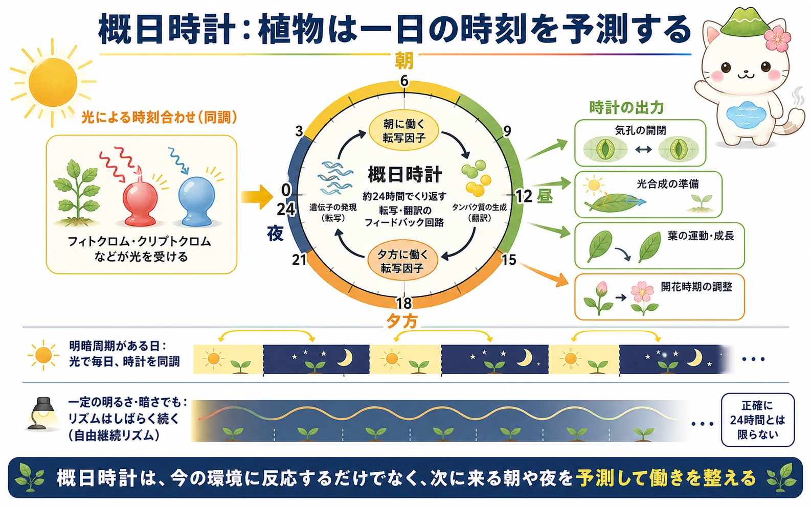
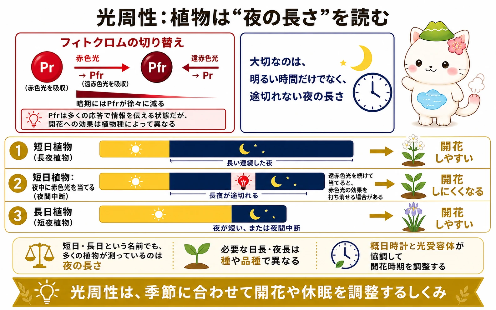

概日時計は何をするか
概日時計は、およそ24時間の周期で繰り返す内在的な時間測定の仕組みです。植物細胞では、複数の転写因子が互いの遺伝子発現を促進・抑制する転写・翻訳フィードバック回路をつくり、朝・昼・夕方・夜に働きやすい遺伝子群を切り替えます。シロイヌナズナでは、CCA1・LHY・TOC1などがこの回路の一部として研究されています。
時計の出力は、気孔の開閉、光合成の準備、葉の運動、伸長成長、防御、開花などに及びます。時計は一つの大きな振り子だけではなく、多くの組織や細胞にある時計が相互に影響し合う仕組みです。これにより、植物は朝が来てから準備するのではなく、朝が来る前から必要な働きを高められます。
光による同調と自由継続リズム
内部時計だけでは、日々の明暗周期と少しずつずれてしまいます。そこで光、温度などの環境情報が時計の位相を合わせます。これを同調といいます。光受容体であるフィトクロム、クリプトクロム、フォトトロピンなどが、明暗の情報を時計へ伝えます。
植物を一定の明るさ、または一定の暗さに置いても、葉の運動や遺伝子発現の周期はしばらく続きます。これは自由継続リズムであり、リズムが外部の明暗に対する単なる受け身の反応ではないことを示します。ただし周期は正確に24時間とは限らず、環境周期による同調が大切です。


概日時計は「時計を見る器官」ではないよ。遺伝子とタンパク質の働きが時間差でつながることで、細胞の中に一日のリズムが生まれるんだ。
フィトクロムが読む赤色光と遠赤色光
フィトクロムは、赤色光と遠赤色光を受け取る光受容体です。赤色光を吸収するPr型は、赤色光を受けるとPfr型へ変わります。Pfr型は遠赤色光を吸収するとPr型へ戻り、暗期にも徐々に減ります。この可逆的な変換により、植物は光の質と暗期の経過を情報として使えます。
Pfrは多くの反応で重要な情報伝達状態ですが、「Pfrが多いと必ず開花」のような単純な規則ではありません。開花に対する効果は植物種によって異なり、概日時計の状態、ほかの光受容体、温度などとも組み合わさります。
光周性：夜の長さと開花
光周性は、日長や夜長に応じて発達を変える性質です。短日植物（長夜植物）は、一定以上に長い連続した夜で開花しやすくなります。長日植物（短夜植物）は、夜が短いとき、または夜が光で中断されたときに開花しやすい型です。必要な日長・夜長は種や品種で異なります。
短日植物の夜の途中に赤色光を短く当てると、長い夜が途切れたものとして扱われ、開花が抑えられることがあります。その直後に遠赤色光を当てると赤色光の効果を打ち消せる場合があり、フィトクロムが関わることを示す古典的な実験になっています。大切なのは「短日・長日」という名前より、途切れない夜の長さです。

葉で読んだ季節情報は芽へ届く
光周性の情報を受け取る重要な場所は葉です。たとえばシロイヌナズナでは、長日条件で概日時計と光のタイミングがそろうと、葉でFTというタンパク質の発現が高まり、FTが師部を通って茎頂へ移動します。茎頂では花芽形成を進める遺伝子群と働き、栄養成長から生殖成長への移行を助けます。
これは「花は芽でできるが、季節の情報は葉で読む」例です。すべての植物が同じ経路を使うわけではありませんが、光・時計・長距離輸送・遺伝子発現がつながって開花時期を決める、という枠組みは広く役立ちます。
「短日植物」は、短い日が好きというより、長く続く夜を確かめたい植物。夜中の小さな光でも予定が変わることがあるんだね。
この冊子の要点
- 概日時計は転写・翻訳のフィードバック回路を基盤とする、およそ24時間の内在的な時間測定の仕組みです。
- 光や温度が時計を同調させます。一定条件でも自由継続リズムが見られます。
- フィトクロムは赤色光と遠赤色光でPr・Pfrを切り替え、光の質と暗期の情報を利用します。
- 光周性では、多くの場合、連続した夜の長さが重要です。短日・長日の必要条件は種や品種で異なります。
- 葉で読んだ季節情報は、FTなどの移動性の情報を通じて茎頂の花芽形成へつながります。
参照資料
- OpenStax Biology 2e：Plant Sensory Systems and Responses
- Taiz et al., Plant Physiology and Development, Oxford University Press.
- Andrés & Coupland, “The genetic basis of flowering responses to seasonal cues,” Nature Reviews Genetics.